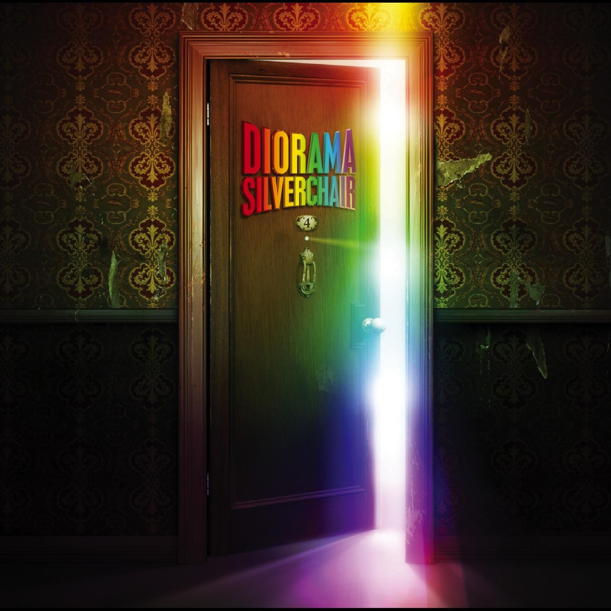

Diorama - Silverchair
Created: 2021-02-21 | Modified: 2021-07-18

The album cover is the worst part of the album. It's so bad it brings the album down with it.
The band Silverchair, one of Australia's most prized possessions.
The album Diorama, is something I discovered in the past 6-months. I had previously enjoyed some of Silverchair's other work, mainly from the grunge era, but hadn't heard any of their more alternative stuff. Specifically, I had heard Frogstomp, their 1995 debut album, but only enjoyed the singles.
I decided to listen to Diorama after watching the documentary about how they made the album. I believe the documentary took place 5 - 10 years after it's release, not sure exactly. Either way, after hearing the single from the album, Without You, I knew the album would be right up my alley. I'm glad I decided to listen to the album, as I really enjoy it. Much better than their grunge stuff, honestly. It's surprising how unknown their post-90s works are outside of Australia (I'm in Canada). I had no clue how renowned they and this album are. I didn't even know this album existed.
I really like the sound they went for on this album, being filled to the brim with string instruments, guitars, and entire orchestras. The mixing is good too, really creating an uber-dynamic soundstage for each and every song. The fluctuations between soft to hard are well calculated. Such a switch-up compared to the album previous, having an almost entirely grunge sound.
I have yet to heard anything after this album. It's on my need-to-hear list.
Favorite song: Too Much of Not Enough or Without You.
 2020, 2021 (C) Brody Rethy. All rights reserved.
2020, 2021 (C) Brody Rethy. All rights reserved.